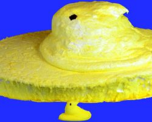

Piyoko

A mouthwatering piece of marshmallow heaven
Do you like sweet things? Do you like things shaped like ducks? If you answered "YES!" to both of these questions, then Oh Boy, do I have something for you today. This recipe is brought to you straight from the land of the rising sun. The cloudlike texture of this candy will show you new highs, that will make you want to quit those fancy Belgian chocolates
What to grab:
- Colored sugar
- 1 Packet of gelatin
- ⅓ Cup of water
- 1 Cup of sugar
- ¼ Cup of water
- 1 Teaspoon of vanilla extract
Steps to reach candy heaven
- In mixer bowl, put a ⅓ of a cup of cold water.
- Empty the packet of gelatin over water and let it sit
- In a saucepan, combine 1 cup of sugar with a ¼ of a cup of water
- Swirl to combine well
- Using a candy thermometer, heat over medium heat until it reaches soft ball stage (115 C)
- Do not stir during this process. If crystals form on pan walls, use brush with water to dissolve it back down
- When at 115 C, remove from heat and slowly pour into a mixer bowl with gelatin
- Stir by hand for a couple minute to break any gelatin lumps
- When cooled slightly, place on mixer with whisk attachment and combine at medium-high speed until white and somewhat stiff
- Immediately transfer to large piping bag
- With colored sugar in a shallow dish, pipe chick shapes directly into the sugar
- Use a spoon to cover the marshmallow chicks with sugar
- Liftoff!